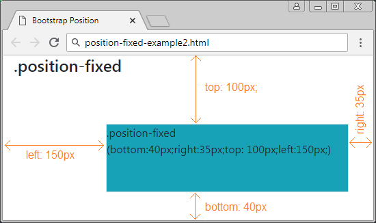

Một đặc điểm đặc biệt của phần tử với {position: fixed} là bạn có thể neo (anchor) cố định 4 cạnh của nó với 4 cạnh của khung nhìn (viewport) của trình duyệt. Trong trường hợp đó, nếu kích thước của viewport thay đổi, kích thước của phần tử này cũng thay đổi theo. Nó giống như hình minh họa dưới đây:
